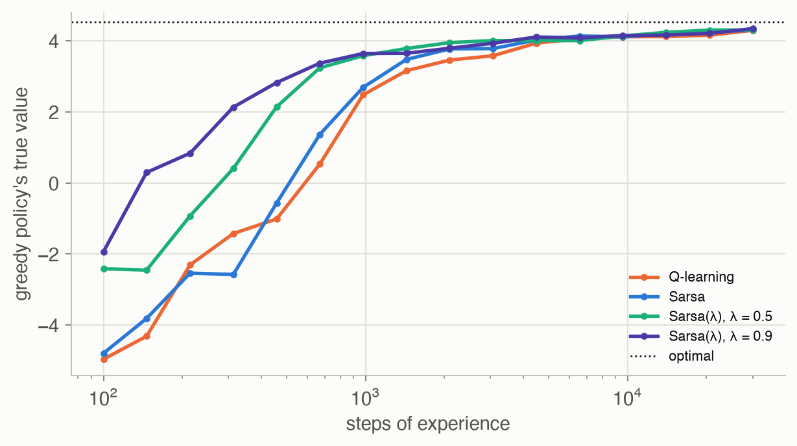

17 · Model-Free Methods
Part III — Model Uncertainty
Big picture
Where this chapter fits
Chapter 16 learned a model of the world and planned on it. That works well when the state space is small enough to count transitions in. Model-free methods skip the model entirely: they learn the action value function \(Q(s, a)\), how good each action is in each state, straight from experience. There’s no transition table to fill in and no planning step, just a small correction to \(Q\) after every step. This is the core of practical reinforcement learning, from classic Q-learning to the deep Q-networks that learned to play Atari games. Chapter 18 turns to learning from an expert’s demonstrations instead of from rewards.
The question: how can an agent learn good action values from its own experience, one step at a time, without ever writing down the dynamics?
The short answer: nudge each estimate toward a one-step target. An average can be learned incrementally: move the estimate a fraction \(\alpha\) of the way toward each new sample. Q-learning uses the sample \(r + \gamma \max_{a'} Q(s', a')\), the reward plus the best value available next, and learns the optimal action values even while exploring. Sarsa uses the action actually taken next, and learns the values of the policy it follows, exploration included. Eligibility traces pass each update back along the recent path, so a distant reward is learned quickly. Reward shaping adds hints, safely if they take a potential-based form. With function approximation, the same updates become gradient steps on parameters, and experience replay reuses past experience to make them efficient and stable.
The key ideas at a glance
Incremental estimation. To learn an average from a stream of samples, keep an estimate and move it a fraction \(\alpha\) of the way toward each new sample. With \(\alpha = 1/m\) it is exactly the running average. With a constant \(\alpha\) it tracks recent samples and never quite settles. The gap between the sample and the estimate is a temporal difference error.
Q-learning. The value of taking \(a\) in \(s\) is, on average, the reward plus the discounted value of the best action from wherever you land. Each experience \((s, a, r, s')\) gives one sample of that, \(r + \gamma\max_{a'} Q(s', a')\); move \(Q(s, a)\) toward it. Q-learning is off-policy: it learns the values of the greedy policy while behaving differently, for example exploring with ε-greedy.
Sarsa. Use the action \(a'\) actually taken next instead of the best one: the target is \(r + \gamma Q(s', a')\). Sarsa is on-policy: it learns the values of the policy it follows, exploration included. Near a cliff, that makes it cautious, because it knows it sometimes stumbles.
Eligibility traces. One-step updates pass news of a reward back only one state per visit. Traces keep a fading memory of recently visited state-action pairs, and apply each update to all of them in proportion. A reward found at the end of a long path is credited to the whole path at once.
Reward shaping. Sparse rewards make learning slow; adding intermediate rewards can speed it up, but can also change what is optimal. Shaping of the form \(F = \gamma\beta(s') - \beta(s)\), a difference of potentials, never changes the optimal policy.
Function approximation and experience replay. With too many states for a table, represent \(Q_\theta(s, a)\) with parameters and turn the update into a gradient step. Experience replay stores recent experience and learns from random batches of it, which reuses data and breaks up the correlations between consecutive steps.
Vocabulary
| Term | Plain meaning |
|---|---|
| Model-free learning | Learning values or policies directly, without estimating \(T\) and \(R\) |
| Learning rate \(\alpha\) | How far each update moves an estimate toward its new sample |
| Temporal difference (TD) error | Sampled target minus current estimate |
| Q-learning | TD learning of \(Q\) with target \(r + \gamma \max_{a'} Q(s', a')\) |
| Sarsa | TD learning of \(Q\) with target \(r + \gamma Q(s', a')\), using the next action taken |
| On-policy / off-policy | Learning the values of the policy being followed / of a different policy |
| Eligibility trace \(N(s, a)\) | A decaying record of how recently and often a pair was visited |
| Reward shaping \(F(s, a, s')\) | Extra reward added during training to guide learning |
| Potential function \(\beta(s)\) | A score of states whose differences define safe shaping |
| Experience replay | Storing past transitions and learning from random batches of them |
After this chapter you can
- Estimate a mean incrementally, and choose a learning rate schedule.
- Implement Q-learning and Sarsa, and explain when they learn different policies.
- Speed up learning with eligibility traces, optimistic initialization, and potential-based reward shaping, and recognize shaping that changes the optimal policy.
- Apply Q-learning with linear function approximation, and use experience replay.
Intuition
TipAnalogy
You’re learning how long each route to work takes, without a map.
- Incremental averaging: every trip, you adjust your estimate for the route you took a little toward that day’s time.
- Q-learning: you judge the first leg of a trip by the time it took plus the best time you know from where it left you, even if today you took a detour from there.
- Sarsa: you judge it by what you actually did next, detours included. If you often take detours, Sarsa’s estimates include them.
- Traces: when a trip turns out great, you credit the whole route, not just the last turn.
- Shaping: a friend’s hint (“the closer to the river, the faster”) helps you learn, as long as it can’t lure you into driving in circles.
Moving averages
Bus waits average 8 minutes but vary a lot. With \(\alpha = 1/m\) the estimate is the exact running average; after 300 waits its typical error is 0.46 minutes. A constant \(\alpha = 0.3\) keeps chasing the latest waits, with an error of 3.3 minutes that never shrinks. A schedule that decays too fast, \(\alpha = 1/m^{1.5}\), stops learning before it has enough data: error 2.1 (Figure 4). See Equation 1.
One step of truth, then trust your estimates
Q-learning never sees the rules of Hex World. It moves each \(Q(s, a)\) toward the reward just received plus the best \(Q\) at the next tile. After 1,432 steps of ε-greedy experience, its greedy policy is worth 3.16 on average; after 30,000, 4.29 (the optimum is 4.53). See Equation 2.
Learning the policy you follow
On a towpath beside a canal, the shortest route runs right along the edge. Q-learning learns that route (9 steps), because it values the best next move. But while it still explores 10% of the time, it keeps stumbling into the water: it averaged -31.1 per episode late in training. Sarsa learns the value of its own stumbling policy, so it prefers a path that stays at least 2 rows from the water, 13 steps long, and averaged -20.6 (Figure 6). See Equation 3.
Pass the credit back
When Sarsa reaches a reward, only the last step’s value changes. Eligibility traces also update the steps before it, fading with distance. On Hex World, after 1,432 steps, Sarsa’s greedy policy was worth 3.48, and Sarsa(λ) with λ = 0.5 3.78 (Figure 5). See Equation 4.
Hints that don’t mislead
On the mountain trail of Chapter 16, Q-learning with ε-greedy exploration learned to climb in 0% of 20 runs. Adding a potential-based hint, “being higher is worth 1 per position”, it learned in 85%. A naive hint, “+5 for every step up”, backfires: the policy that is optimal for the hinted rewards walks down from the summit so it can earn the bonus again, and never enjoys the view. See Equation 5.
Scale up with parameters, reuse with replay
For the mountain car, a table won’t do: position and speed are continuous. Q-learning with a linear function of 49 Fourier features needed 178 steps per episode after 100 episodes. Replaying random batches of stored experience, it needed 123 (Figure 7). See Equation 6 and Equation 7.
Formalism
Incremental estimation of the mean
The average of \(m\) samples can be updated one sample at a time (ADM §17.1):
\[ \hat x_m = \hat x_{m-1} + \alpha(m)\big(x^{(m)} - \hat x_{m-1}\big), \qquad \sum_{m=1}^\infty \alpha(m) = \infty,\quad \sum_{m=1}^\infty \alpha(m)^2 < \infty \tag{1}\]
In words. Move the estimate a fraction of the way toward each new sample. For the estimate to converge, the steps must shrink, but not too fast.
Term by term.
- \(x^{(m)} - \hat x_{m-1}\) is the temporal difference error: how much the new sample surprised the old estimate.
- With \(\alpha(m) = 1/m\), \(\hat x_m\) is exactly the sample mean.
- The first condition keeps the steps large enough to reach the answer from any start. The second keeps them small enough for the noise to average out. \(1/m\) and \(1/m^{0.6}\) satisfy both. \(1/m^{1.5}\) fails the first: its steps shrink so fast that the estimate stops early. A constant \(\alpha\) fails the second: it keeps fluctuating, but it tracks a mean that drifts.
- With a constant \(\alpha\), the estimate is a weighted average in which a sample \(k\) updates old has weight \(\alpha(1 - \alpha)^k\): an exponential moving average.
Why it holds. \(\hat x_m = \frac1m \sum_{i \le m} x^{(i)} = \frac1m\big(x^{(m)} + (m - 1)\hat x_{m-1}\big) = \hat x_{m-1} + \frac1m\big(x^{(m)} - \hat x_{m-1}\big)\). The conditions on \(\alpha\) are the Robbins–Monro conditions for stochastic approximation (H. Robbins and S. Monro, Annals of Mathematical Statistics, 1951).
Q-learning
The action value satisfies the Bellman equation \(Q(s, a) = R(s, a) + \gamma \sum_{s'} T(s' \mid s, a) \max_{a'} Q(s', a')\), which is an expectation over the next state. Replace the expectation with one sample, and use the incremental update (ADM §17.2; C. J. C. H. Watkins, 1989):
\[ Q(s, a) \leftarrow Q(s, a) + \alpha\Big(r + \gamma \max_{a'} Q(s', a') - Q(s, a)\Big) \tag{2}\]
In words. After each step, move the value of what you just did toward what you got plus the best you believe you can do from where you landed.
Term by term.
- \(r + \gamma\max_{a'} Q(s', a')\) is the target: a one-sample estimate of the right side of the Bellman optimality equation, using the current \(Q\) for the future.
- The target doesn’t depend on which action the agent takes next, so the agent may explore freely while learning the greedy policy’s values. That is what off-policy means.
- The max over noisy estimates tends to overestimate, a bias that double Q-learning reduces.
- If every pair is tried infinitely often and \(\alpha\) meets the conditions of Equation 1 for each pair, \(Q\) converges to \(Q^*\).
Why it holds. In expectation over \((r, s')\) the target equals the Bellman backup of \(Q\), and that backup is a contraction (Chapter 7). So Q-learning is a noisy, sample-by-sample version of value iteration on \(Q\), and stochastic approximation theory handles the noise.
Sarsa
Sarsa uses the quintuple \((s, a, r, s', a')\), where \(a'\) is the action the agent actually takes next (ADM §17.3; G. A. Rummery and M. Niranjan, 1994):
\[ Q(s, a) \leftarrow Q(s, a) + \alpha\Big(r + \gamma\, Q(s', a') - Q(s, a)\Big) \tag{3}\]
In words. Move the value of what you did toward what you got plus the value of what you actually do next.
Term by term.
- The target uses \(Q(s', a')\) for the action chosen by the behavior policy (for example ε-greedy), not the maximum.
- So Sarsa estimates \(Q^\pi\) for the policy \(\pi\) it follows, exploration included: it is on-policy.
- If exploration is reduced over time, so that the policy becomes greedy in the limit, Sarsa too converges to \(Q^*\).
Why it holds. In expectation, the target is the Bellman expectation backup for the behavior policy, \(R + \gamma \sum_{s'} T \sum_{a'} \pi(a' \mid s') Q(s', a')\). Sarsa is a sampled version of policy evaluation for the policy it follows, and it improves as that policy improves.
Eligibility traces
Keep a trace \(N(s, a)\) for every pair. With the Sarsa TD error \(\delta = r + \gamma Q(s', a') - Q(s, a)\), each step does (ADM §17.4):
\[ N(s, a) \leftarrow N(s, a) + 1; \qquad Q(\tilde s, \tilde a) \leftarrow Q(\tilde s, \tilde a) + \alpha\,\delta\, N(\tilde s, \tilde a)\ \ \text{and}\ \ N(\tilde s, \tilde a) \leftarrow \gamma\lambda N(\tilde s, \tilde a)\ \ \text{for all } (\tilde s, \tilde a) \tag{4}\]
In words. Every pair visited recently gets a share of the current surprise, a smaller share the longer ago it was visited.
Term by term.
- \(N(\tilde s, \tilde a)\) counts visits, decaying by \(\gamma\lambda\) per step: a pair visited \(k\) steps ago has trace \((\gamma\lambda)^k\) (if visited once).
- \(\lambda = 0\) is plain Sarsa. \(\lambda \to 1\) credits the whole episode, like a Monte Carlo return.
- Traces are reset at the start of each episode.
- With Q-learning, traces must be cut whenever an exploratory action is taken, or they credit the greedy policy with the explorer’s outcomes (Watkins’s \(Q(\lambda)\)).
Why it holds. Summing the trace-weighted updates over an episode gives approximately the update toward a λ-return, an average of \(n\)-step returns with weights \((1 - \lambda)\lambda^{n-1}\). It is the same blend of short and long lookaheads as generalized advantage estimation in Chapter 13 (R. S. Sutton, Machine Learning, 1988).
Reward shaping
During training, add \(F(s, a, s')\) to the reward. In general this changes the optimal policy, but not if \(F\) is a difference of potentials (ADM §17.5; A. Y. Ng, D. Harada and S. Russell, ICML, 1999):
\[ F(s, a, s') = \gamma\, \beta(s') - \beta(s) \tag{5}\]
In words. Reward progress in a “potential” score, discounting the new state’s score as the future is discounted.
Term by term.
- \(\beta(s)\) is any function of the state, for example minus the distance to a goal. On the trail we use \(\beta(s) = s\), the position.
- Along any trajectory, the shaping terms telescope: \(\sum_t \gamma^t F_t = \gamma^T\beta(s_T) - \beta(s_0)\). So every policy’s value shifts by \(-\beta(s_0)\) (plus a vanishing term), which is the same for every policy starting from \(s_0\).
- A bonus that isn’t of this form, like “+5 for every step up”, can be collected in loops, creating new optima that the designer never intended.
Why it holds. With shaping, the optimal action values become \(Q'^*(s, a) = Q^*(s, a) - \beta(s)\). Subtracting a function of the state alone doesn’t change which action is best. Ng, Harada and Russell also showed the converse: shaping that preserves the optimal policy for every MDP must have this form.
Action value function approximation
With a parameterized \(Q_\theta\), minimize \(\frac12\mathbb{E}[(Q^*(s, a) - Q_\theta(s, a))^2]\) by stochastic gradient descent, replacing the unknown \(Q^*(s, a)\) by the one-step target (ADM §17.6):
\[ \theta \leftarrow \theta + \alpha\Big(r + \gamma\max_{a'} Q_\theta(s', a') - Q_\theta(s, a)\Big)\nabla_\theta Q_\theta(s, a) \tag{6}\]
In words. Move the parameters so that \(Q_\theta(s, a)\) comes closer to the target, in proportion to the TD error.
Term by term.
- For a linear \(Q_\theta(s, a) = \theta_a^\top \phi(s)\), the gradient is the feature vector \(\phi(s)\) in the block of \(\theta\) for action \(a\).
- The target also depends on \(\theta\), but the update treats it as fixed: a “semi-gradient”. That is one reason such methods can diverge. Scaling each step to a bounded norm (Chapter 12), as here, helps.
- Every update changes \(Q_\theta\) everywhere the features overlap, which generalizes across states, but can also overwrite what was learned elsewhere (“catastrophic forgetting”).
Why it holds. With the true \(Q^*\) in place of the target, it is exactly stochastic gradient descent on the squared error: the gradient of \(\frac12(Q^* - Q_\theta)^2\) is \(-(Q^* - Q_\theta)\nabla_\theta Q_\theta\). The one-step target is Q-learning’s estimate of \(Q^*\).
Experience replay
Store the most recent transitions in a buffer. Periodically sample a random batch of \(m_{\text{grad}}\) of them and step along their average gradient (ADM §17.7; L.-J. Lin, 1992; V. Mnih et al., 2013):
\[ \theta \leftarrow \theta + \frac{\alpha}{m_{\text{grad}}}\sum_{i=1}^{m_{\text{grad}}}\Big(r^{(i)} + \gamma\max_{a'} Q_\theta(s'^{(i)}, a') - Q_\theta(s^{(i)}, a^{(i)})\Big)\nabla_\theta Q_\theta(s^{(i)}, a^{(i)}) \tag{7}\]
In words. Learn from a random handful of past experiences at once, not just the latest one.
Term by term.
- Each tuple \((s^{(i)}, a^{(i)}, r^{(i)}, s'^{(i)})\) comes from the buffer, which holds recent experience from older versions of the policy. Because Q-learning is off-policy, that’s fine.
- Averaging over a batch reduces the variance of the step, and sampling at random breaks the correlation between consecutive steps.
- Each experience is used many times, which improves data efficiency.
- In this page’s code the step is taken every step (the book takes one every \(m\) steps, discarding the \(m\) oldest tuples), and scaled to norm at most 1.
Why it holds. It is minibatch stochastic gradient descent on the same objective as Equation 6. The data are drawn from the recent experience distribution instead of the current state alone.
Worked example
A running average by hand
Four bus waits: 12, 6, 9 and 3 minutes, starting from \(\hat x_0 = 0\).
| Wait \(m\) | Sample | \(\alpha = 1/m\): \(\hat x_m\) | \(\alpha = 0.5\): \(\hat x_m\) |
|---|---|---|---|
| 1 | 12 | \(0 + 1 \times 12 = 12\) | \(0 + 0.5 \times 12 = 6\) |
| 2 | 6 | \(12 + \tfrac12(6 - 12) = 9\) | \(6 + 0.5(6 - 6) = 6\) |
| 3 | 9 | \(9 + \tfrac13(9 - 9) = 9\) | \(6 + 0.5(9 - 6) = 7.5\) |
| 4 | 3 | \(9 + \tfrac14(3 - 9) = 7.5\) | \(7.5 + 0.5(3 - 7.5) = 5.25\) |
With \(\alpha = 1/m\), the last estimate is the exact average, \(30/4 = 7.5\). With \(\alpha = 0.5\), the most recent wait counts half, and the first one only \(0.5^4 = 1/16\). Starting from 0 also drags that estimate down.
Q-learning and Sarsa disagree by the canal
On the towpath, the agent walks east along the row right next to the canal (reward −1 per step, \(\gamma = 1\), \(\alpha = 0.5\)). Suppose its current estimates at the new cell are: \(Q(\text{east}) = -8\), the best, along the edge; \(Q(\text{north}) = -10\); \(Q(\text{south}) = -101\), into the canal. It currently estimates \(Q(\text{east})\) at its old cell as \(-10\).
- Q-learning uses the best next value: target \(-1 + (-8) = -9\), so \(Q \leftarrow -10 + 0.5(-9 - (-10)) = -9.5\).
- Sarsa uses the action actually taken next. If ε-greedy happened to pick “south” (probability \(0.1 / 4 = 0.025\)), the target is \(-1 + (-101) = -102\), and \(Q \leftarrow -10 + 0.5(-102 + 10) = -56\).
Sarsa’s value of standing by the water absorbs the occasional stumble; Q-learning’s doesn’t. Averaged over many visits, Sarsa learns that edge cells are worth less for an agent that explores. So it routes further from the water, where a stumble costs only a step.
A trace in three steps
Sarsa(λ) with \(\gamma = 0.9\), \(\lambda = 0.8\), so traces decay by 0.72 per step. The agent visits \((s_1, a_1)\), then \((s_2, a_2)\), then \((s_3, a_3)\), and at the third step receives a surprise \(\delta = 5\). The traces are then \(0.72^2 = 0.518\), \(0.72\) and \(1\). With \(\alpha = 0.1\) the three values change by \(0.1 \times 5 \times (0.518, 0.72, 1) = (0.26, 0.36, 0.5)\). Plain Sarsa would change only the last, by 0.5.
Interactive
Q-learning versus Sarsa on the towpath
Scrub through training. Each cell shows its current greedy action, and is shaded by its estimated value (darker is worse). The blue line is the greedy path from start (S) to finish (F); the bottom row between them is the canal.
Learning rates, live
Draw a stream of bus waits (average 8 minutes) and compare a constant learning rate with a decaying one, \(\alpha = 1/m^p\).
Algorithms & code
Tabular learners
def incremental_mean(xs, alpha):
"""Running estimates x_hat_m = x_hat_{m-1} + alpha(m) (x_m - x_hat_{m-1})
(eq. 17.5), starting from 0. alpha(m) = 1/m gives the sample mean."""
est, out = 0.0, []
for m, x in enumerate(xs, start=1):
est += alpha(m) * (x - est)
out.append(est)
return np.array(out)
def epsilon_greedy(q, epsilon, rng):
"""A random action w.p. epsilon, else a greedy one (ties at random)."""
if rng.random() < epsilon:
return int(rng.integers(len(q)))
return int(rng.choice(np.flatnonzero(q == q.max())))
class QLearning:
"""Q(s, a) <- Q(s, a) + alpha (r + gamma max_a' Q(s', a') - Q(s, a))
(eq. 17.10): off-policy, it learns the greedy policy's values while
following an exploring one."""
def __init__(self, n_states, n_actions, gamma, alpha, q0=0.0):
self.Q = np.full((n_states, n_actions), float(q0))
self.gamma, self.alpha = gamma, alpha
def start(self):
"""Called at the start of each episode (nothing to reset here)."""
def update(self, s, a, r, s2, a2):
target = r + self.gamma * self.Q[s2].max()
self.Q[s, a] += self.alpha * (target - self.Q[s, a])
class Sarsa(QLearning):
"""Q(s, a) <- Q(s, a) + alpha (r + gamma Q(s', a') - Q(s, a)) (eq. 17.11),
with a' the action actually taken next: on-policy, it learns the
values of the exploring policy itself."""
def update(self, s, a, r, s2, a2):
target = r + self.gamma * self.Q[s2, a2]
self.Q[s, a] += self.alpha * (target - self.Q[s, a])
class SarsaLambda(QLearning):
"""Sarsa with eligibility traces (eqs. 17.12-17.14). N[s, a] is a
decaying visit count; each TD error delta updates every pair in
proportion to it, so reward flows back along the recent path."""
def __init__(self, n_states, n_actions, gamma, alpha, lam, q0=0.0):
super().__init__(n_states, n_actions, gamma, alpha, q0)
self.lam = lam
self.N = np.zeros_like(self.Q)
def start(self):
self.N[:] = 0.0 # traces don't cross episodes
def update(self, s, a, r, s2, a2):
self.N[s, a] += 1
delta = r + self.gamma * self.Q[s2, a2] - self.Q[s, a]
self.Q += self.alpha * delta * self.N # every pair, by its trace
self.N *= self.gamma * self.lam
def run_tabular(env, learner, steps, s0, rng, epsilon=0.1, reset=None,
shaping=None, on_step=None):
"""Learn on a DiscreteMDP env for `steps` steps with epsilon-greedy
actions on learner.Q.
reset(s2, rng) returns a new start state when an episode ends (and
None otherwise). shaping(s, s2) is added to the reward the learner
sees (not to the reward recorded). on_step(t, learner) is called after
every step. Returns the rewards received.
"""
n_s = env.R.shape[0]
rewards = np.zeros(steps)
s = s0
learner.start()
a = epsilon_greedy(learner.Q[s], epsilon, rng)
for t in range(steps):
s2 = rng.choice(n_s, p=env.T[s, a])
r = env.R[s, a]
a2 = epsilon_greedy(learner.Q[s2], epsilon, rng) # Sarsa needs a'
bonus = 0.0 if shaping is None else shaping(s, s2)
learner.update(s, a, r + bonus, s2, a2)
rewards[t] = r
s, a = s2, a2
start = None if reset is None else reset(s, rng)
if start is not None: # new episode
s = start
learner.start()
a = epsilon_greedy(learner.Q[s], epsilon, rng)
if on_step is not None:
on_step(t, learner)
return rewards
def potential_shaping(beta, gamma):
"""F(s, s') = gamma beta(s') - beta(s) (eq. 17.15): shaping that
provably leaves the optimal policy unchanged."""
return lambda s, s2: gamma * beta[s2] - beta[s]using ADM, Random, Statistics, LinearAlgebra
import Distributions
hw = hex_world() # states 1..27; the last one is the terminal
nS, nA, γ = size(hw.R, 1), size(hw.R, 2), hw.γ
decision = [s for s in 1:nS-1 if hw.T[s, 1, nS] < 1] # tiles that don't end the episode
ε_greedy(q, ε, rng) = rand(rng) < ε ? rand(rng, 1:length(q)) : rand(rng, findall(==(maximum(q)), q))
# One learner = a function update!(Q, N, s, a, r, s′, a′); N holds eligibility traces.
q_learning!(Q, N, s, a, r, s′, a′; α = 0.1) = (Q[s, a] += α * (r + γ * maximum(Q[s′, :]) - Q[s, a]))
sarsa!(Q, N, s, a, r, s′, a′; α = 0.1) = (Q[s, a] += α * (r + γ * Q[s′, a′] - Q[s, a]))
function sarsa_λ!(Q, N, s, a, r, s′, a′; α = 0.1, λ = 0.5)
N[s, a] += 1
δ = r + γ * Q[s′, a′] - Q[s, a]
Q .+= α * δ .* N # every pair, in proportion to its trace
N .*= γ * λ
end
function learn(update!, steps, rng; ε = 0.1)
Q, N = zeros(nS, nA), zeros(nS, nA)
s = rand(rng, decision)
a = ε_greedy(Q[s, :], ε, rng)
for t in 1:steps
s′ = rand(rng, Distributions.Categorical(hw.T[s, a, :]))
a′ = ε_greedy(Q[s′, :], ε, rng)
update!(Q, N, s, a, hw.R[s, a], s′, a′)
s, a = s′, a′
if s == nS # terminal: start a new episode
s = rand(rng, decision)
N .= 0.0 # traces don't cross episodes
a = ε_greedy(Q[s, :], ε, rng)
end
end
return Q
end
# True value of the greedy policy, by exact policy evaluation.
function greedy_value(Q)
π = [argmax(Q[s, :]) for s in 1:nS]
Tπ = [hw.T[s, π[s], s′] for s in 1:nS, s′ in 1:nS]
Rπ = [hw.R[s, π[s]] for s in 1:nS]
return mean(((I - γ * Tπ) \ Rπ)[decision])
end
for (name, f) in (("Q-learning", q_learning!), ("Sarsa", sarsa!), ("Sarsa(λ)", sarsa_λ!))
v = mean(greedy_value(learn(f, 1000, MersenneTwister(seed))) for seed in 1:10)
println(rpad(name, 12), "after 1,000 steps: ", round(v; digits = 2))
end
@assert mean(greedy_value(learn(q_learning!, 30_000, MersenneTwister(seed))) for seed in 1:5) > 4.0Function approximation and replay
class GradientQLearning:
"""Q-learning with a linear action value function
Q_theta(s, a) = theta[a] @ features(s) (eq. 17.21), with the step's
gradient scaled to norm at most 1.
With replay > 0, experience tuples go into a buffer of that size and,
every `every` steps, one step is taken along the average gradient of
a random batch of `batch` tuples (eq. 17.22) instead.
"""
def __init__(self, features, n_features, n_actions, gamma, alpha,
replay=0, batch=32, every=1):
self.features, self.gamma, self.alpha = features, gamma, alpha
self.theta = np.zeros((n_actions, n_features))
self.buffer = deque(maxlen=replay) if replay else None
self.batch, self.every, self.t = batch, every, 0
def q(self, f):
"""Q values of all actions, for one feature vector f."""
return self.theta @ f
def update(self, f, a, r, f2, done, rng):
self.t += 1
if self.buffer is None:
# One tuple: TD error times grad_theta Q = the features f.
target = r + (0.0 if done else self.gamma * self.q(f2).max())
g = np.zeros_like(self.theta)
g[a] = (target - self.q(f)[a]) * f
else:
self.buffer.append((f, a, r, f2, done))
if len(self.buffer) < self.batch or self.t % self.every:
return
pick = rng.integers(len(self.buffer), size=self.batch)
F, A, R, F2, D = (np.array(x) for x in
zip(*(self.buffer[i] for i in pick)))
# Batched targets: (batch, n_actions) values of the next states.
targets = R + np.where(D, 0.0,
self.gamma * (F2 @ self.theta.T).max(1))
td = targets - (F * self.theta[A]).sum(axis=1)
g = np.zeros_like(self.theta)
np.add.at(g, A, td[:, None] * F) # sum rows per action
g /= self.batch
self.theta += self.alpha * scale_gradient(g, 1.0)
def run_episode(learner, env_step, s0, rng, epsilon=0.0, max_steps=1000):
"""One episode of gradient Q-learning from state s0.
env_step(s, a) returns (s2, r, done) for action index a. Actions are
epsilon-greedy on the current Q. Returns the number of steps taken.
"""
s, f = s0, learner.features(s0)
for t in range(1, max_steps + 1):
a = epsilon_greedy(learner.q(f), epsilon, rng)
s2, r, done = env_step(s, a)
f2 = learner.features(s2)
learner.update(f, a, r, f2, done, rng)
if done:
return t
s, f = s2, f2
return max_stepsusing ADM, Random, Statistics, LinearAlgebra
# Fourier features over (position, speed): cos/sin up to order 3 per axis, all products.
lo, hi = [MOUNTAIN_CAR_X[1], MOUNTAIN_CAR_V[1]], [MOUNTAIN_CAR_X[2], MOUNTAIN_CAR_V[2]]
function φ(s)
z = (s .- lo) ./ (hi .- lo) # 0 to 1 across each axis
axis(t) = [0.5; [sin(2π * i * t) for i in 1:3]; [cos(2π * i * t) for i in 1:3]]
return vec(axis(z[1]) * axis(z[2])') # all pairwise products (outer product)
end
scaled(g) = norm(g) > 1 ? g ./ norm(g) : g # cap the step's length at 1
# One episode of gradient Q-learning; θ has one row of weights per action.
# With a replay buffer, each step learns from a random batch of 32 stored tuples.
function episode!(θ, rng; α = 0.3, buffer = nothing, cap = 1000)
s = [-0.6 + 0.2rand(rng), 0.0]
for t in 1:cap
f = φ(s)
q = θ * f
a = rand(rng, findall(==(maximum(q)), q))
s′ = mountain_car_step(s, MOUNTAIN_CAR_ACTIONS[a])
done = mountain_car_goal(s′)
batch = buffer === nothing ? [(f, a, φ(s′), done)] : (push!(buffer, (f, a, φ(s′), done));
length(buffer) < 32 ? [] : rand(rng, buffer, 32))
if !isempty(batch)
g = zero(θ)
for (fb, ab, f2, d) in batch # TD error × features, in action ab's row
target = -1 + (d ? 0.0 : maximum(θ * f2))
g[ab, :] .+= (target - dot(θ[ab, :], fb)) .* fb
end
θ .+= α .* scaled(g ./ length(batch))
end
done && return t
s = s′
end
return cap
end
nf = length(φ([0.0, 0.0]))
for (name, buf) in (("gradient Q-learning", () -> nothing), ("with replay", () -> Any[]))
late = mean(begin
rng, θ, b = MersenneTwister(seed), zeros(3, nf), buf()
lengths = [episode!(θ, rng; buffer = b) for _ in 1:60]
mean(lengths[41:60])
end for seed in 1:3)
println(rpad(name, 21), "steps per episode, episodes 41-60: ", round(late))
end
NoteReading the Julia code (for Python programmers)
q_learning!(Q, N, s, a, r, s′, a′; α = 0.1) = (...)is a one-line function; keyword arguments come after the;. All three learners share one signature, solearncan take any of them.Q .+= α * δ .* Nupdates the whole table in place, likeQ += alpha * delta * Non NumPy arrays.(I - γ * Tπ) \ Rπsolves the linear system for the policy’s values:Iis the identity fromLinearAlgebra,\is NumPy’snp.linalg.solve.vec(axis(z[1]) * axis(z[2])'): a column times a row ('transposes) gives the outer product, a 7 × 7 matrix of all products, flattened to 49 features.(push!(...); expr)runs two expressions and returns the second, a compact way to append and then decide.rand(rng, buffer, 32)draws 32 elements with replacement, likerng.choice(len(buffer), 32).
Run them
env = hex_world()
learner = mf.QLearning(len(env.R), 6, env.gamma, alpha=0.1)
terminal = len(env.R) - 1
decision = [s for s in range(terminal) if env.T[s, 0, terminal] < 1]
mf.run_tabular(env, learner, 30_000, decision[0], np.random.default_rng(0), epsilon=0.1,
reset=lambda s, rng: rng.choice(decision) if s == terminal else None)
greedy_value = policy_evaluation_exact(env.T, env.R, env.gamma, learner.Q.argmax(axis=1))[decision].mean()Q-learning on Hex World, 30,000 steps: greedy policy worth 4.41 (optimal 4.53)Results
Learning rates
![Two line charts with the number of waits across. Left: one stream of waits, grey dots scattered from 0 to over 20, with a dotted line at the true mean 8. The 1/m estimate settles near 9, this stream's own average; 1/m^0.6 and constant 0.05 wander between about 6 and 12; constant 0.3 jumps between about 3 and 20; 1/m^1.5 freezes after a few waits near 7.8, close to 8 here only by luck. Right, log-log, averaged over 500 streams: the 1/m error falls steadily to about 0.5; 1/m^0.6 falls more slowly to about 1; constant 0.05 falls, then levels off near 1.3; 1/m^1.5 levels off near 2; constant 0.3 levels off near 3.4.](ch17-model-free-methods_files/figure-html/fig-incremental-output-1.png)
Tabular learning on Hex World

After 1,432 steps, the greedy policies were worth 3.16 (Q-learning), 3.48 (Sarsa), 3.78 (Sarsa(λ), λ = 0.5), 3.65 (Sarsa(λ), λ = 0.9). After 30,000 steps: 4.29, 4.31, 4.31, 4.34. Traces help most early, when rewards have only been reached a few times. Later all four converge toward the optimum, 4.53. None gets there exactly, because a constant \(\alpha = 0.1\) keeps the estimates noisy (Equation 1).
On-policy versus off-policy
![Left: line chart with episodes 0 to 500 across and return per episode up the side. Both methods start far below minus 100 and improve quickly; after about 100 episodes Sarsa stays near minus 20 while Q-learning stays lower, near minus 30, with more dips. Right: a 4 by 8 grid with the canal along the bottom row between the start S and the finish F. Q-learning's path, in orange, goes up one cell, along the row just above the canal, and down to F: 9 steps. Sarsa's path, in blue, goes up two cells, runs along the row two above the canal, rises to the top row for two cells in the middle, and comes back down: 13 steps.](ch17-model-free-methods_files/figure-html/fig-towpath-output-1.png)
In 100% of runs, Q-learning’s greedy path was the 9-step route along the edge, the optimal one. In 90% of runs, Sarsa’s was a 13-step route further from the water. Yet during training, Sarsa collected more reward: -20.6 per episode over the last 100 episodes, against -31.1 for Q-learning. Both are right about different questions. Q-learning answers “what is the best path if I stop exploring?” Sarsa answers “what is the best path given that I keep exploring?”
Exploration and shaping on the trail
| Learner (5,000 steps, 20 runs) | Learned to climb | True value of the final greedy policy, from the trailhead | Reward per step, last 1,000 steps |
|---|---|---|---|
| Q-learning, ε = 0.1 | 0% | 1.00 | 0.047 |
| Sarsa(λ = 0.9), ε = 0.1 | 10% | 1.71 | 0.104 |
| Q-learning, optimistic Q₀ = 20 | 80% | 6.65 | 0.641 |
| Q-learning, potential shaping | 85% | 7.06 | 0.659 |
| Q-learning, +5 bonus per step up | 0% | 0.00 | 0.002 |
| optimal policy | 8.13 |
- Plain ε-greedy exploration fails, as it did with a model in Chapter 16. Eligibility traces don’t help, because the problem is getting to the summit at all, not propagating its reward.
- Optimistic initial values (\(Q_0 = 20\), the most any action could be worth) are the model-free version of R-MAX: every untried action looks excellent until tried, so the agent keeps climbing to find out.
- Potential-based shaping with \(\beta(s) = s\) rewards each step up by about \(\gamma(s + 1) - s\) and charges the same for each step down. The optimal policy for the shaped rewards is climb everywhere (true value 8.13), the same as for the real rewards, and the hint makes it easy to find.
- A naive “+5 per step up” bonus changes what is optimal. For the shaped rewards, the best policy at the summit is back: step back down, then climb again to collect the bonus. Its true value from the trailhead is 0.00, because the view is never enjoyed.
Function approximation on the mountain car
![Left: line chart with episodes 0 to 150 across and steps per episode on a log scale up the side. Both start near the 1,000-step cap. With replay, steps fall to about 150 within 20 episodes and settle near 120; without replay, they fall more slowly and settle near 180 to 200. Right: a heat map of the learned value over position from minus 1.2 to 0.6 across and speed from minus 0.07 to 0.07 up the side. It is lowest, about minus 100, at the valley bottom near position minus 0.5 and speed 0, and rises toward the edges; in corners the car never visits, such as high leftward speed near the goal, the fit extrapolates to impossible positive values of up to about 40.](ch17-model-free-methods_files/figure-html/fig-mountain-car-output-1.png)
Over the first 10 episodes, plain gradient Q-learning needed 555 steps per episode and replay 374. Over the last 50: 178 and 123. From the ten standard starts of Chapter 10, the final greedy policies needed 156 and 119 steps on average. Replay does 32 gradient evaluations per step instead of 1, so it trades computation for data: it gets more out of every step of experience.
The value map is right where the car travels: lowest at rest in the valley, where the most steps remain. With every reward −1 and \(\gamma = 1\), no true value can be positive, yet the fit reaches 51 in corners of the state space the car never visits. A linear function is fitted only where there is data, and extrapolates freely elsewhere. That is harmless here, because the policy never goes there. There’s no explicit exploration here. Every step costs −1 and the values start at 0, so untried actions look better than tried ones, which is optimistic initialization again.
Solved problems
Problem 1: incremental averages. Temperatures 20, 22, 18 and 24 arrive. Compute the incremental estimates with \(\alpha = 0.25\), starting from \(\hat x_0 = 20\). What weight does each sample have in the final estimate?
TipSolution
\(\hat x_1 = 20 + 0.25(20 - 20) = 20\); \(\hat x_2 = 20 + 0.25(2) = 20.5\); \(\hat x_3 = 20.5 + 0.25(-2.5) = 19.875\); \(\hat x_4 = 19.875 + 0.25(4.125) \approx 20.91\). Sample \(k\) steps before the last has weight \(0.25 \times 0.75^k\): 0.25 for 24, 0.1875 for 18, 0.141 for 22, 0.105 for 20. The initial value keeps weight \(0.75^4 \approx 0.32\). With a constant rate, the start is never fully forgotten, only exponentially discounted.
Problem 2: one Q-learning step. \(\gamma = 0.9\), \(\alpha = 0.2\). The agent takes \(a\) in \(s\), receives \(r = 2\) and lands in \(s'\) where \(Q(s', \cdot) = (1, 4, 3)\). The current \(Q(s, a) = 5\). What is the new \(Q(s, a)\)? What would Sarsa give if the next action were the third?
TipSolution
Q-learning: target \(2 + 0.9 \times 4 = 5.6\), TD error \(0.6\), new \(Q(s, a) = 5 + 0.2 \times 0.6 = 5.12\). Sarsa with \(a' = 3\): target \(2 + 0.9 \times 3 = 4.7\), TD error \(-0.3\), new \(Q = 5 - 0.06 = 4.94\). The two updates even go in opposite directions, because Sarsa’s target reflects the non-greedy action actually taken.
Problem 3: shaping that loops. A robot gets +1 when it reaches its charger. To help, a designer adds +0.5 every time the robot moves closer to the charger (by distance), and nothing for moving away. With \(\gamma = 0.9\), why can this change the optimal policy? Fix it with a potential.
TipSolution
Moving away costs nothing, and moving back earns 0.5, so a two-step loop earns 0.5 every other step, worth about \(0.5/(1 - 0.81) \approx 2.6\) discounted, forever. That beats reaching the charger for +1 once. Use \(\beta(s) = -0.5 \times \text{distance}(s)\) and \(F = \gamma\beta(s') - \beta(s)\). Moving closer by one then earns about \(+0.5\) and moving away costs about \(-0.5\), so any loop nets roughly nothing (exactly a discount term), and the optimal policy is unchanged.
Problem 4: how far back does a trace reach? With \(\gamma = 0.95\) and \(\lambda = 0.9\), after how many steps does a pair’s trace fall below 0.1 of its value when visited? What happens with \(\lambda = 0\)?
TipSolution
The trace decays by \(\gamma\lambda = 0.855\) per step. \(0.855^k < 0.1\) when \(k > \ln 0.1 / \ln 0.855 \approx 14.7\), so after 15 steps. A reward found 15 steps after a decision still moves that decision’s value by at least a tenth of the full amount. With \(\lambda = 0\), traces vanish after one step: plain Sarsa, which updates only the most recent pair.
Problem 5: why replay needs an off-policy learner. The replay buffer holds transitions collected by older, worse policies. Why is that acceptable for Q-learning but not for Sarsa?
TipSolution
Q-learning’s target, \(r + \gamma\max_{a'} Q(s', a')\), uses only \((s, a, r, s')\) and the current \(Q\). It doesn’t matter which policy chose \(a\), because the target is about the greedy policy. Sarsa’s target uses \(a'\), the action the behavior policy took next. With old transitions, that is an old policy’s action, so Sarsa would learn a mixture of outdated policies’ values rather than the current one’s. Replay pairs naturally with off-policy methods.
Recap
- Model-free learning is incremental averaging toward sampled targets (Equation 1). Why it matters: the learning rate decides whether estimates converge (decaying) or track change (constant). That choice reappears in every method on this page and in deep reinforcement learning.
- Q-learning learns optimal values while exploring (Equation 2). Why it matters: it needs no model and converges to \(Q^*\) under mild conditions. It is the ancestor of deep Q-networks.
- Sarsa learns the values of the policy it actually follows (Equation 3). Why it matters: when exploration is risky, on-policy learning is safer while training. On the towpath, Sarsa collected -21 per episode against Q-learning’s -31, by choosing a longer, safer route.
- Eligibility traces and shaping speed up learning; only potential-based shaping is safe (Equation 4, Equation 5). Why it matters: sparse rewards are the norm in real problems. A careless bonus on the trail created a policy that never reaches the summit: reward hacking in miniature.
- Function approximation and experience replay scale Q-learning up (Equation 6, Equation 7). Why it matters: this pair, with a neural network in place of our linear features, is DQN. On the mountain car, replay cut the steps per episode from 178 to 123.
Cheat sheet & connections
| Name | Formula | Ref |
|---|---|---|
| Incremental mean | \(\hat x \leftarrow \hat x + \alpha(x - \hat x)\); \(\sum\alpha = \infty\), \(\sum\alpha^2 < \infty\) | Equation 1 |
| ★ Q-learning | \(Q(s, a) \mathrel{+}= \alpha(r + \gamma\max_{a'}Q(s', a') - Q(s, a))\) | Equation 2 |
| ★ Sarsa | \(Q(s, a) \mathrel{+}= \alpha(r + \gamma Q(s', a') - Q(s, a))\) | Equation 3 |
| Sarsa(λ) | \(Q \mathrel{+}= \alpha\delta N\), \(N \leftarrow \gamma\lambda N\) | Equation 4 |
| ★ Potential-based shaping | \(F(s, a, s') = \gamma\beta(s') - \beta(s)\) | Equation 5 |
| Gradient Q-learning | \(\theta \mathrel{+}= \alpha(r + \gamma\max_{a'}Q_\theta(s', a') - Q_\theta(s, a))\nabla_\theta Q_\theta(s, a)\) | Equation 6 |
| Experience replay | average the gradient over a random batch from a buffer | Equation 7 |
Common pitfalls
- A learning rate that decays too fast. \(\alpha = 1/m^{1.5}\) stops learning while the estimate is still wrong; constant rates never settle.
- Judging Q-learning by its training rewards. It learns the greedy policy’s values, but earns the exploring policy’s rewards. Evaluate the greedy policy separately.
- Reward bonuses that can be farmed. Any shaping reward that isn’t a difference of potentials can create loops that pay more than the real goal.
- Eligibility traces with off-policy learning. Cut the traces when an exploratory action is taken, or the greedy policy is credited with the explorer’s luck.
- Divergence with function approximation. Bootstrapping, off-policy learning and function approximation together can make the parameters blow up. Small or scaled steps, replay and target networks help.
Connections
- Ch 15 · Exploration and Exploitation: ε-greedy and optimism, now at every state.
- Ch 16 · Model-Based Methods: the same trail learned with a model; optimistic initial values mirror R-MAX.
- Ch 8 · Approximate Value Functions: the Fourier features and the mountain car.
- Ch 13 · Actor-Critic Methods: TD errors and λ-weighted returns (GAE) for training a critic.
- Ch 18 · Imitation Learning: learning from demonstrations when rewards are hard to specify.
- Appendix D · Neural Representations: the networks that replace linear features in deep Q-learning.